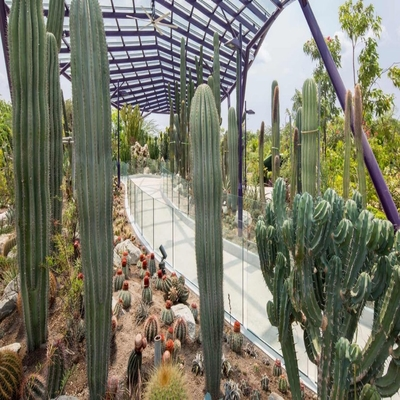
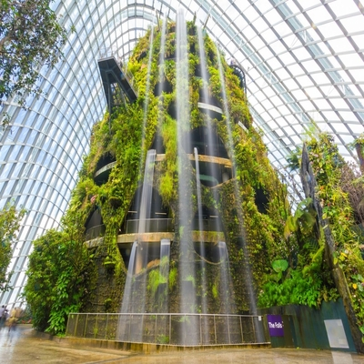
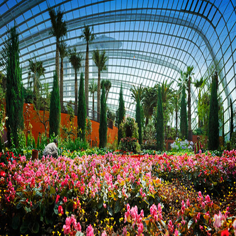

The Conservatories and Floral Fantasy are open from 9am to 9pm daily, while the Bay Gardens are open from 5am to 2am daily. Please note that peak hours are from 4pm to 7pm,
longer waiting times should be expected. In the interest of conserving the environment, all decorative and accent lighting will be switched off at 11pm, and other essential lighting will be reduced.

Entry to TWO Conservatories costs $28 for adults and $15 for children. For Singaporean residents, TWO conservatories cost $20 for adults, $15 for seniors and $12 for children from 3-12 years old.
Floral Fantasy standard entry rates are $20 for adults and $12 for children, while the Singaporean resident rate is $12 for seniors, and $8 for seniors and children.

We aim to be as accessible as possible and as such, we have nursing rooms, water coolers, stroller and wheelchair rentals, bicycle parking and free mobile charging stations. Gardens By The Bay is wheelchair friendly, and if you have
any concerns, please approach our friendly staff for assistance. Rest assured, Gardens by the Bay also has food offerings from fast food to local delights.

While in the Gardens, please refrain from littering and smoking so as to create wondrous experiences for everyone. Please do not use control aerial objects as well, ranging from kites to remote-controlled planes, drones and
other similar devices. As part of our efforts to enjoy nature, picnics are allowed in the Gardens' grounds, other than in the Conservatories.

As the Gardens are mainly outdoors and in Singapore's heat, it will be good to bring reuseable water bootles to keep hydrated. If needed, do bring along mosquito repellants as well. Also, to beat the heat, it is encouraged
to bring along sun-protection devices such as sunscreen, caps and umbrellas if you are prone to sunburn.
If you would like to learn more about our Gardens and their flora, we have plenty of guided tours around the Bay Gardens with our experienced tour guides. You can also choose to have the tour in a cruiser, for a different experience.
In the Conservatories, we have audio guides (in English, Mandarin and Japanese) available for rental as well.